สแกน QR จุดตรวจ
พิมพ์ QR จาก Force ติดตามจุด รปภ. สแกนผ่านไลน์ เห็นผลทันที
ระบบบริหารงาน รปภ. ที่ใช้ผ่าน LINE ไม่ต้องลงแอป
ทดลองใช้กับโครงการนำร่องก่อนตัดสินใจ ตั้งค่าเสร็จในวันเดียว ทักไลน์
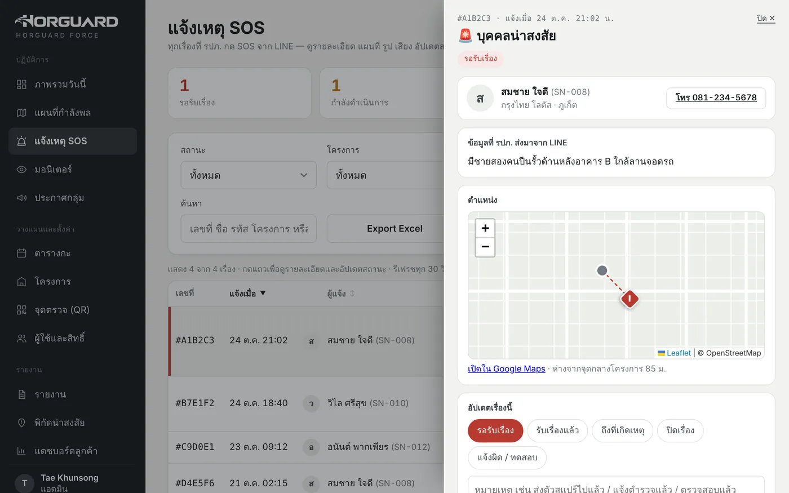
สมชาย สแกนจุด ลานจอด B2
ตรงเวลารอบตรวจ ประตูหลัง
รอสแกนแจ้งเหตุ: ไฟทางเดินชั้น 3 ดับ
ส่งหัวหน้าแล้วข้อมูลตัวอย่าง
รปภ. กดจากเมนูใน LINE ที่มีอยู่แล้ว มือถือรุ่นเก่าก็ใช้ได้
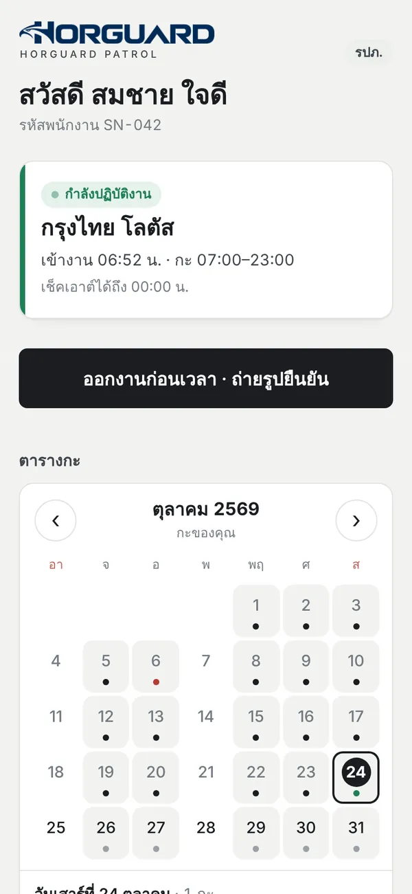
ไม่ต้องรอดูสมุดตอนเช้า หัวหน้าเห็นว่าใครอยู่ป้อมไหน เดินถึงจุดไหน ตั้งแต่วินาทีที่เกิดขึ้น
พิมพ์ QR จาก Force ติดตามจุด รปภ. สแกนผ่านไลน์ เห็นผลทันที
ยืนยันว่าอยู่ในพื้นที่โครงการจริง ด้วยเวลาจากเซิร์ฟเวอร์
สร้างกะทั้งเดือนจากแม่แบบ หรือเปิดโหมดไม่ต้องจัดกะให้ป้อมที่สลับคนเอง
เจ้าของสถานที่เปิดดูรอบตรวจ รูปหลักฐาน และรายงานของโครงการตัวเองได้
เจ้าของ แอดมิน ผู้จัดการโซน และครูฝึก เปิดจากเมนูไลน์ เห็นว่าไซต์ไหนคนครบ ไซต์ไหนขาด และมี SOS ทันที
ผู้จัดการโซนดูภาพรวมและแผนที่ของโซนตัวเองโดยไม่เห็นข้อมูลค่าแรง รหัสพนักงานออกให้อัตโนมัติ เบอร์โทรห้ามซ้ำ และปิดใช้ผู้ใช้แล้วออกจากระบบทุกเครื่องทันที
รอบไหนเลยเวลาแล้วยังไม่สแกน หัวหน้าได้ข้อความทาง LINE ทันที
อนุมัติลา กระจายกะว่าง และสรุปชั่วโมงพร้อม OT 1.25 / 2.5 เท่า ตามกฎ รปภ. 2569
ทุกเหตุที่ รปภ. แจ้งจาก LINE กลายเป็น Ticket ใน Force มีสถานะ รับเรื่อง ถึงที่เกิดเหตุ และปิดเรื่อง บันทึกว่าใครทำอะไร เมื่อไหร่ เห็นแผนที่และระยะห่างจากโครงการ รูปและเสียงจากหน้างาน และ Export Excel ได้
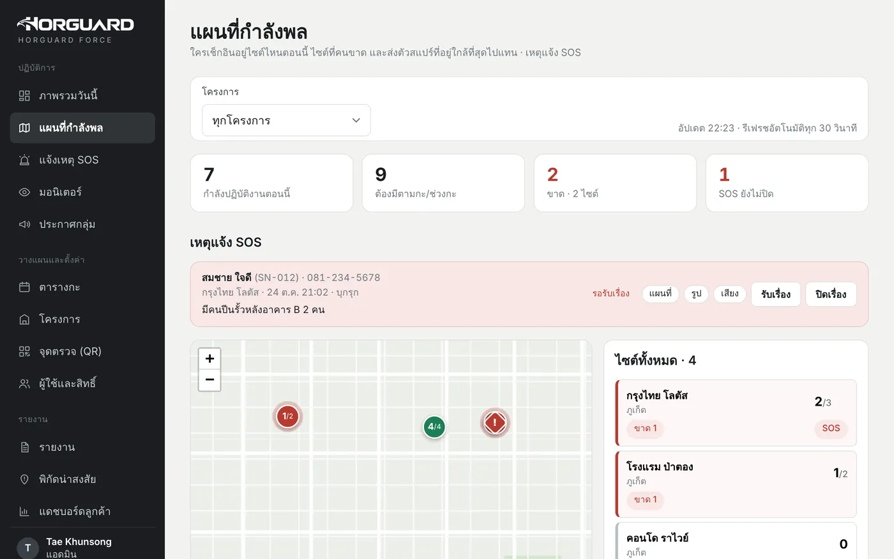
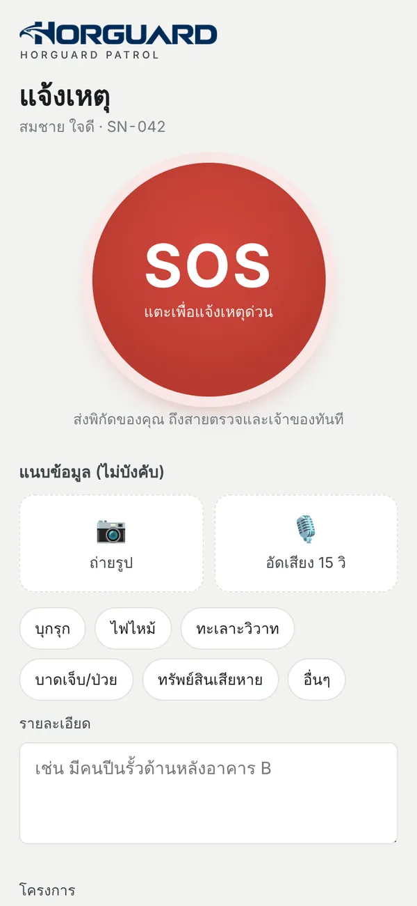
อัปเดตล่าสุด ตุลาคม 2569
ฟีเจอร์ใหม่ที่ช่วยให้หัวหน้ารับมือเหตุได้เร็วขึ้น และมั่นใจว่าคนที่ลงเวลาคือตัวจริง
ให้ผู้ใช้ออกจากระบบทุกเครื่องได้ในคลิกเดียว หรือแบน 1–30 วัน ผู้ถูกแบนได้รับแจ้งเหตุผลทาง LINE ทันที
ระบบติดธงการลงเวลาที่พิกัดน่าสงสัย แสดงในมอนิเตอร์ และรวมเป็นรายงานให้หัวหน้าตรวจและบันทึกผล
รูปโปรไฟล์ LINE ขึ้นในรายชื่อ มอนิเตอร์ และแผนที่กำลังพล หัวหน้ารู้ทันทีว่าใครเป็นใคร
รปภ. หัวหน้ากะ และสแปร์ ลงเวลาจากแท็บเล็ตกลางแทนกันไม่ได้ ส่วนผู้บริหารยังใช้ iPad ได้ตามปกติ
สำหรับคนดูแลหลายไซต์ เห็นภาพรวม แผนที่กำลังพล SOS และรายงานของโซนตัวเองแบบดูอย่างเดียว โดยไม่เห็นข้อมูลค่าแรง
หน้าจอแสดงโครงก่อนข้อมูลมา และจำรายชื่อที่ใช้บ่อยไว้ เปลี่ยนหน้าได้ไวขึ้น
เจ้าของ แอดมิน และผู้จัดการโซน ดูภาพรวม กะ และจุดตรวจสดจากเว็บ เปิดบน iPad ได้
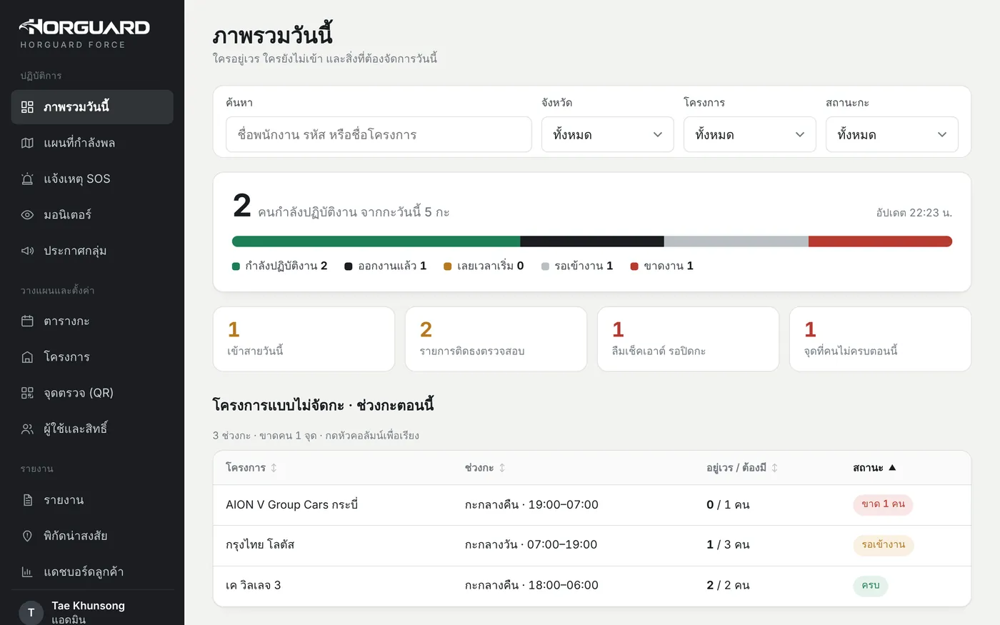
ทุกหน้าปรับตามขนาดจออัตโนมัติ ทั้งมือถือ จอพับ แท็บเล็ต และคอมพิวเตอร์ ภาพด้านล่างย่อทุกเครื่องด้วยสัดส่วนเดียวกัน
ปัดเพื่อดูรุ่นอื่น
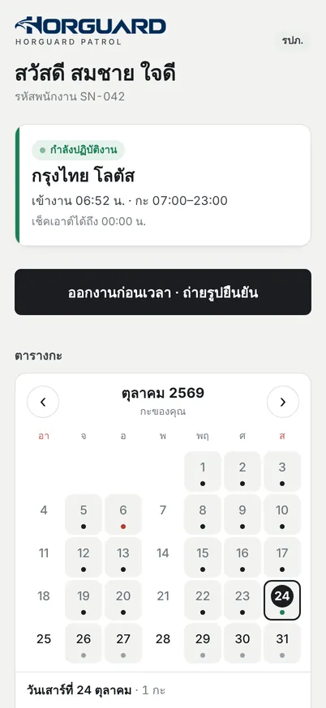
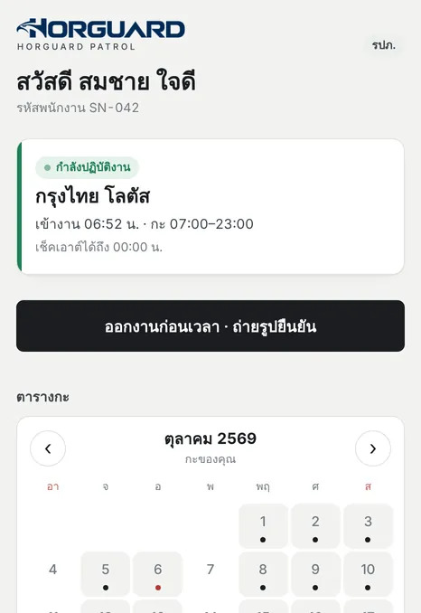
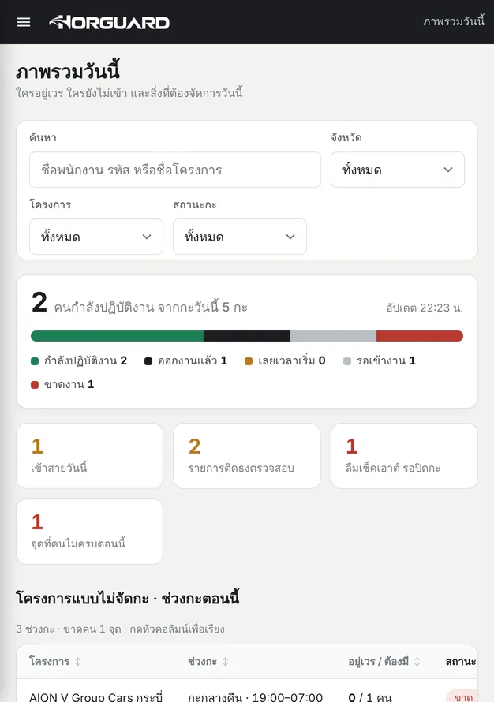
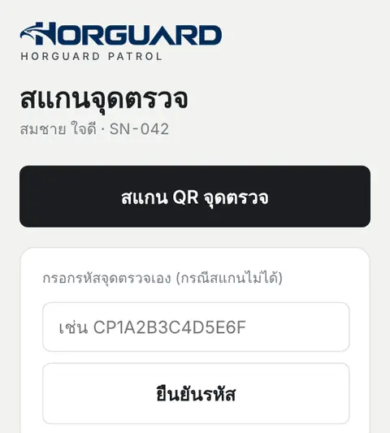
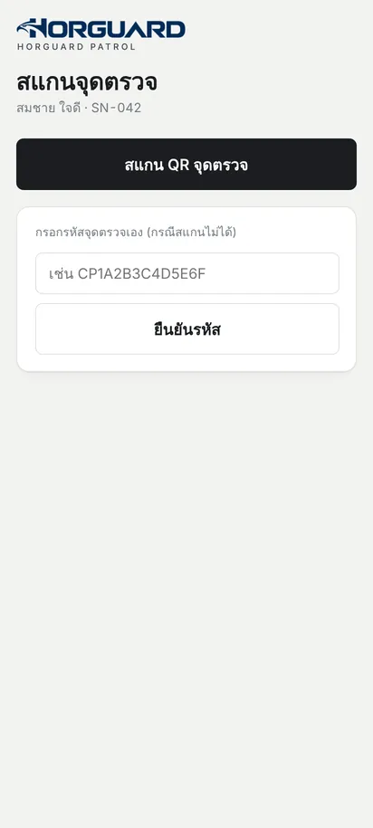
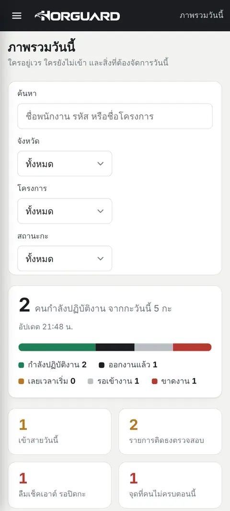
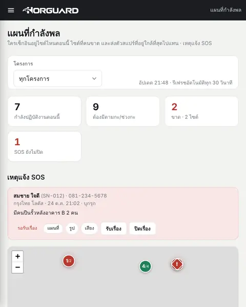
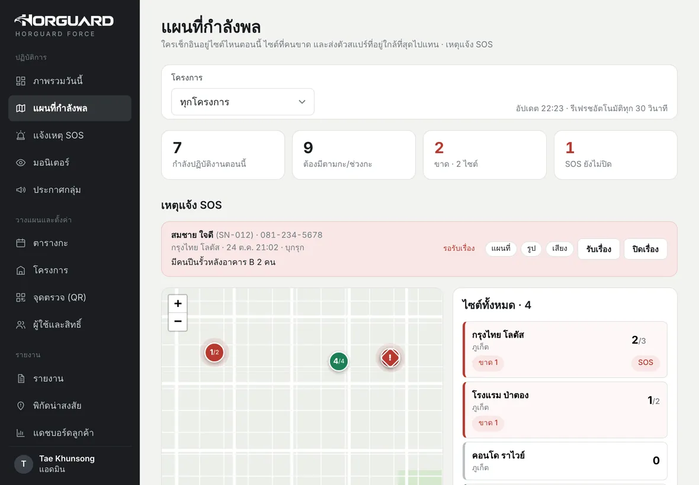
ไม่ต้องลงแอปเพิ่ม เปิดจากเมนูใน LINE OA ของบริษัท ใช้ได้ทั้ง iPhone และ Android รวมถึงมือถือรุ่นเก่า
force.horguard.com ใช้ได้บนมือถือ แท็บเล็ต และคอมพิวเตอร์ เมนูและตารางปรับตามขนาดจอ
ทดสอบทุกหน้าที่ความกว้างจอ 320–1440 px
เทียบกับสิ่งที่บริษัท รปภ. ส่วนใหญ่ใช้อยู่ตอนนี้
ไม่ต้อง รปภ. เพิ่มเพื่อน LINE ของบริษัทแล้วกดเมนูได้เลย ใช้ได้ทั้ง iPhone และ Android
ทุกการเข้างานต้องมีเซลฟี่คู่กับพิกัด ระบบใช้เวลาจากเซิร์ฟเวอร์ และตั้งธงรายการผิดปกติให้หัวหน้าตรวจ เช่น ตำแหน่งแปลก หรือสแกนจุดเร็วเกินกว่าจะเดินทัน
ไม่ต้อง เปิดโหมดไม่จัดกะล่วงหน้าให้ป้อมนั้น รปภ. ที่ผูกกับโครงการเข้างานเองได้ และระบบเตือนเมื่อคนในช่วงเวลานั้นไม่ครบ
ข้อมูลแต่ละบริษัทแยกกันด้วยสิทธิ์ระดับฐานข้อมูล รปภ. ให้ความยินยอมก่อนเก็บรูปและพิกัด และกำหนดระยะเวลาเก็บรูปได้
คิดรายเดือนตามจำนวน รปภ. ที่ใช้งานจริง ไม่มีค่าเครื่อง ไม่ผูกสัญญายาว ทักไลน์เพื่อรับใบเสนอราคาตามขนาดบริษัท
เจ้าของ แอดมิน ผู้จัดการโซน และหัวหน้ากะ เข้าที่ force.horguard.com ด้วยบัญชี LINE ใช้ได้ทั้งบนคอมพิวเตอร์และ iPad ส่วน รปภ. สายตรวจ และทีมหน้างานเปิดจากเมนูใน LINE OA ของบริษัท
รปภ. ใช้ผ่าน LINE บนมือถือ iPhone และ Android ได้ทุกรุ่นที่ติดตั้ง LINE ได้ ส่วน Force เปิดบนเบราว์เซอร์ได้ทั้งมือถือ จอพับอย่าง iPhone Duo และ Galaxy Z Fold / Z Flip แท็บเล็ต และคอมพิวเตอร์ ทั้งนี้ รปภ. หัวหน้ากะ และสแปร์ ลงเวลาได้จากมือถือเท่านั้น
บอกจำนวนโครงการและ รปภ. ของคุณ เราจะติดต่อกลับเพื่อนัดเดโมและเสนอราคา
ทดลองใช้กับโครงการนำร่องก่อนตัดสินใจ ตั้งค่าเสร็จในวันเดียว
 สแกนเพื่อเพิ่มเพื่อน
สแกนเพื่อเพิ่มเพื่อน
https://lin.ee/5e7WMZjเปิดบนมือถือแล้วกดลิงก์ หรือสแกน QR ด้วยกล้อง ลานจอด B2CP-0417
ลานจอด B2CP-0417